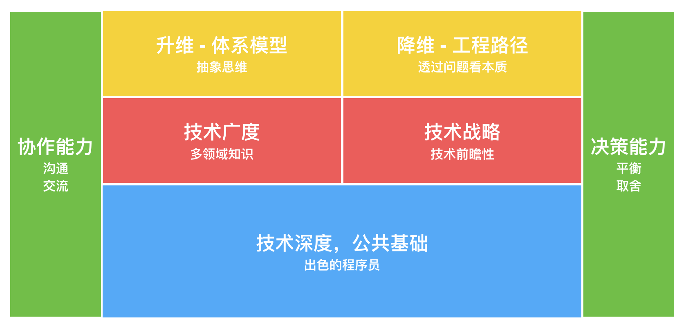
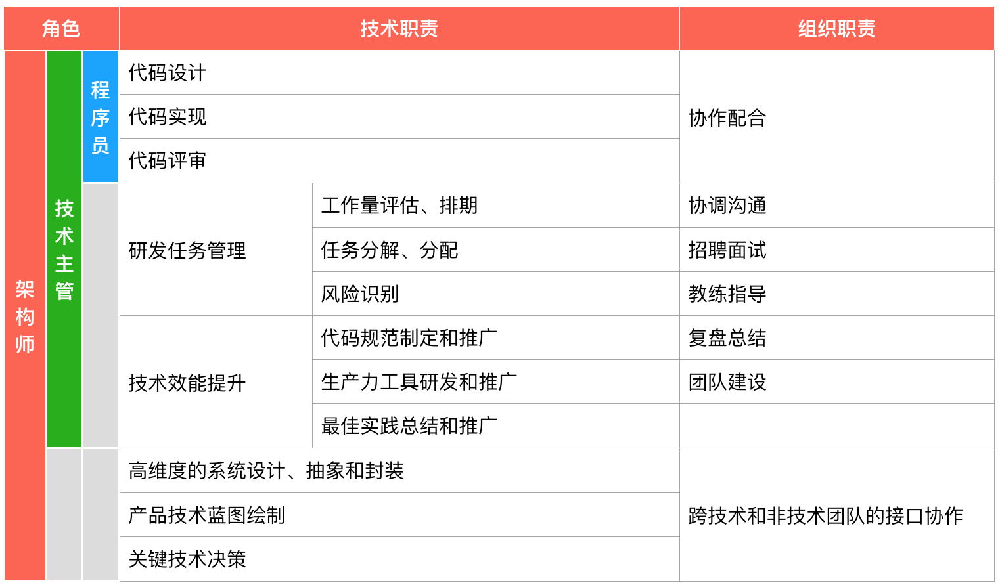

- 00 开篇词 程序行知：走在同样的路上，遇见自己的风景.md.html
- 01 初心：为什么成为一名程序员？.md.html
- 02 初惑：技术方向的选择.md.html
- 03 初程：带上一份技能地图.md.html
- 04 初感：别了校园，入了江湖.md.html
- 05 架构与实现：它们的连接与分界？.md.html
- 06 模式与框架：它们的关系与误区？.md.html
- 07 多维与视图：系统设计的思考维度与展现视图.md.html
- 08 代码与分类：工业级编程的代码分类与特征.md.html
- 09 粗放与精益：编程的两种思路与方式.md.html
- 10 炫技与克制：代码的两种味道与态度.md.html
- 11 三阶段进化：调试，编写与运行代码.md.html
- 12 Bug的空间属性：环境依赖与过敏反应.md.html
- 13 Bug的时间属性：周期特点与非规律性.md.html
- 14 Bug的反复出现：重蹈覆辙与吸取教训.md.html
- 15 根源：计划的愿景——仰望星空.md.html
- 16 方式：计划的方法——脚踏实地.md.html
- 17 检视：计划的可行——时间与承诺.md.html
- 18 评估：计划的收获——成本与收益.md.html
- 19 障碍：从计划到坚持，再到坚持不下去的时候.md.html
- 20 执行：从坚持到持续，再到形成自己的节奏.md.html
- 21 信息：过载与有效.md.html
- 22 领域：知识与体系.md.html
- 23 转化：能力与输出.md.html
- 24 并行：工作与学习.md.html
- 25 时间：塑造基石习惯（上）——感知与测量.md.html
- 26 时间：塑造基石习惯（下）——切割与构建.md.html
- 27 试试：一种“坏”习惯.md.html
- 28 提问：从技术到人生的习惯.md.html
- 29 偏好：个人习惯的局限与反思.md.html
- 30 写作：写字如编码.md.html
- 31 画图：一图胜千言.md.html
- 32 演讲：表达的技术.md.html
- 33 定义：阶梯与级别.md.html
- 34 晋升：评定与博弈.md.html
- 35 关系：学徒与导师.md.html
- 36 核心：安全与效率——工程技术的两个核心维度.md.html
- 37 过程：规模与协作——规模化的过程方法.md.html
- 38 思维：科学与系统——两类问题的两种思维解法.md.html
- 39 职业倦怠：如何面对？.md.html
- 40 局部最优：如何逃离？.md.html
- 41 沟通之痛：如何改变？.md.html
- 42 技术停滞：如何更新？.md.html
- 43 无法实现：困扰与反思.md.html
- 44 完成作品：理想与现实.md.html
- 45 代码评审：寄望与哀伤.md.html
- 46 人到中年：失业与恐惧.md.html
- 47 该不该去创业公司？.md.html
- 48 该不该接外包？.md.html
- 49 技术干货那么多，如何选？.md.html
- 50 技术分歧，如何决策？.md.html
- 51 技术债务，有意或无意的选择？.md.html
- 52 选择从众，还是唯一？.md.html
- 53 选择工作，还是生活？.md.html
- 54 侠客行：一技压身，天下行走.md.html
- 55 江湖路：刀剑相接，战场升级.md.html
- 56 御剑流：一击必杀，万剑归心.md.html
- 57 三维度：专业、展现与连接.md.html
- 58 三人行：前辈、平辈与后辈.md.html
- 59 三角色：程序员、技术主管与架构师.md.html
- 60 三视角：定位、自省与多维.md.html
- 61 工作之余，专业之外.md.html
- 62 跨越断层，突破边界.md.html
- 63 成长蓝图，进化跃迁.md.html
- 尾声 始于知，终于行.md.html
- 捐赠
59 三角色：程序员、技术主管与架构师
还记得[开篇词]中我画了一个程序员的成长路径图，其中在图的左侧部分展示了程序员成长路径上一些主要阶段的定义，在我们从初级走向资深的过程中，会面临一条支路，在这条路上不仅普遍称呼的名称不同了，工作内容可能也发生了变化，角色的转换会带来不少的困惑。
这条路就是从 “程序员” 到 “技术主管” 再到 “架构师” 的路径，下面我们就来看看这条路径上的三个角色有何不同？
程序员与寻路
当我刚进入软件行业成为一名程序员时，我的理想就是成为一名架构师。
“架构师”这个词的英文叫 Architect，原意是建筑师，因为软件行业参照借鉴了很多建筑行业的概念，所以就借用这个词。我是在学校读书时知道“架构师”这个名词的，当时很多软件方面的书都是翻译过来的，也不知道是谁最早把 Architect 翻译成了“架构师”的。总之从那时起，“架构师”这个名词对于我这个刚准备走出校门的学生来说就特别高大遥远，自然当成了最初的一个职业目标。
但遗憾的是在我从业前几年的好几家公司，都没有架构师这个职位，直到后来进入了互联网公司。到了京东后，不仅有架构师职位，还有架构师团队；在这里，不仅有了方向，还可以放心地作为一名程序员发力狂奔：不停地写程序，优化代码，追求更优、更简洁的代码，重构了一遍又一遍，解决了一个又一个问题。
在前面的文章中，我将程序员具体和代码相关的工作比作剑术，修炼代码技能类似练剑的过程。很多程序员梦想着有一天能成为一代高手，面对敌人，抽刀拔剑，刹那间交击，归剑入鞘，敌人倒下。就像线上系统突然出现大问题，你打开电脑，看了几眼日志，敲下几行代码，系统分分钟恢复。
一个好的程序员当然要能写得一手好代码。在工作前十年中，我每天的主要工作内容就是编程写新代码，重构旧代码，直到有一天发现这样不断继续下去，我的“剑术”已精进迟滞，进境有限。而当时所在的系统开始向大规模分布式化方向发展，更大的价值已不再是代码实现层面上的局部优化。
那时我开始在团队承担起整体的系统设计工作，此时若再专注于局部代码优化其实是在驱动细节而非本质了。作为资深程序员出身的架构师，单兵作战能力都是极强的，就像《进击的巨人》中的利威尔兵长，具备单挑巨人的能力。可当面对成群结队的巨人来袭时，个人单挑能力的作用始终有限。
这时，从程序员到架构师不仅仅是一个名称的变化，它也意味着技能和视角的转变。在地上飞奔了七八年的程序员，在面对成群的巨人袭来时，深深地感觉到，杀光巨人不应是目的，真正的目的应是到达彼岸。所以，选择合适的路径，坚定地前行，清除或绕过挡道的巨人，到达目的地。
是的，我是到了资深程序员阶段直接转向了架构师。而在路径图上还有另一条路，会经历另一个角色：技术主管，这是一个从程序员到架构师阶段的过渡角色。
技术主管与过渡
技术主管，有些公司可能又叫 “技术经理”，英文一般是“Tech Leader”或简称“TL”。
技术主管是开发团队中的某位程序员需要对整个开发团队负责时所承担的角色。既要对最终交付的软件系统负责，另外也会像一个程序员一样去开发实现系统。一般一个技术主管约 70% 的时间可能花在了开发任务分解分配、开发实践、代码审核和风险识别上，而余下 30% 的时间则花在为了保障系统按时交付所需要的各种计划、协作、沟通和管理上。
在拉姆·查兰 (Ram Charan) 写的《领导梯队》一书中提到：一个人的工作角色中至少有百分之五十以上的时间是花费在管理事务上，那么他的角色才算是一个经理（Manager）。所以技术主管（经理）更多还是偏重于技术工作，有点类似产品经理属于以经理命名却非真正的经理角色。
例如：在一个开发团队中经常会碰到技术方案和实现细节方面的分歧，如果程序员无法自主友好地完成对不同技术意见的统一，这时候技术主管就需要介入去了解两种不同意见所造成的冲突，对事不对人地去把问题搞清楚，分析各自方案的利弊，必要的时候甚至能够提出第三种更好的技术方案，以帮助开发团队达成共识。
另一方面，技术主管即使在日常的开发实现中，重点的内容一般也不是放在某个具体的功能实现上。在完成了具体的开发任务评估、分解并分配后，技术主管应该负责设计整体代码的结构和规范，必要时引入能提高整个团队生产力的新工具，推广代码模板，总结最佳实践。并且技术主管需要经常性地关注整个团队完成一项研发任务的水平和实际要求的水平之间的差距问题，让团队不仅满足及时的软件系统交付，同时又得到成长。
现实中，一个开发团队中最优秀的程序员容易被指定承担技术主管的角色，但优秀的程序员又很容易陷入到实现功能的细节中，满足于完美的实现，优雅简洁的代码。但实际上，这样优秀的程序员转入技术主管这个角色后，就很容易尝试控制设计和代码的实现，他们很难接受代码不按照他们希望的方式去编写，这个是他们作为优秀程序员一直以来的工作习惯，长此以往他们自身很容易变成整个开发团队的瓶颈，而团队里的其他成员也未能得到足够的锻炼和成长。
所以技术主管实际相比团队里的其他程序员对系统的视角更开阔，以更有策略和长远的方式来考虑问题。他们即使拥有比团队里所有其他程序员更高超的开发实现技能，对所有开发任务拥有最强大的实现自信，也需要转变为另一种 “借助他人使之实现” 的能力和自信，因为技术主管是一个承担更广泛责任的角色，必然导致能够专注有效编码的时间会相比以前减少很多，而这一点正是优秀程序员转变为技术主管所面临的最大挑战之一。
最适合技术主管角色人，不一定是团队中编程能力最好的人，但必然是团队中编程、沟通和协作能力最综合平衡的人。而技术主管之所以是一个过渡，就在于继续往前走，如果偏向 “主管” 就会成为真正的管理者（经理），如果偏向 “技术” 就会走向架构师。
架构师与取舍
架构师是一个在业界拥有知名的称谓，但在绝大部分公司却不属于一个职位序列，许多公司都很纠结于如何定义架构师的角色，以及架构师所做的工作。
以前听阿里的同学说 P7 属于架构师职位，不过最近在看另一个阿里同学写的文章提及：前几年是有专职的“架构师”职位的，现在已经回归到 “工程师”“技术专家”“研究员” 这样的纯技术职位。可见在一线互联网公司关于架构师的定义也是很模糊的。
[前面]我曾引用过一篇文章《在首席架构师眼里，架构的本质是…》中提到的架构师能力模型图，我结合自己的经验和理解，稍微扩展解释了一下，如下：

架构师能力模型
正因为业界和公司对架构师这个角色的职责定义很模糊，所以很多经验积累到一定程度的优秀程序员，并且在公司内被提升到一定高度的技术级别后，都会冠以 “架构师” 之名。但实际情况是大部分刚刚冠以“架构师”之名的优秀程序员，其能力模型大部分还停留在上图中的蓝色区域，而对其他区域并未有过系统性的认知和训练。
看过了架构师的能力模型，我们再来试着分析下其对应的职责。技术主管的角色与架构师这一角色会产生一些职责上的重叠，事实上我认为在团队规模比较小的时候（十来人的规模），架构师和技术主管的职责几乎完全重叠，甚至技术主管还会代理一些团队主管的角色。
随着软件系统复杂度和规模的提升，团队也相应变大，那么一个架构师此时所处的职责位置就开始和技术主管区别开来。如果把技术主管想成是站在楼顶看整个系统，那么架构师此时就是需要飞到天上去看整个系统了。
开发功能，解决 Bug，优化代码，这是一个高级或资深程序员的拿手技能，也是地面作战的基本技能。而一个架构师还需要掌握空中的技能，也许就像《进击的巨人》中的立体机动装置，让其能在需要时飞在空中看清全局，也能落地发起凌厉一击。
那多了一个空中的维度，过去在地面练到精熟的剑术，飞在空中还有效么？这就需要时间去学习，适应新维度的技巧。这不是一个容易掌握的技能，这也正是前面我写过的从一个点到另一个点连成线的技能升级，需要一个升维的学习过程。
架构师站在更高的空中维度去做关于软件系统的抽象和封装。如果技术主管的抽象和封装层次更多考虑的是语言函数、设计模式、代码结构等这一类的事务，那么架构师是站在整体软件系统高度，考虑不同子系统之间的交互关系、技术的合理性、需求的完整性、未来的演进性，以及技术体系发展与组织、产品商业诉求的匹配度。
这是相对技术主管更高维度的全局视角，另一方面依然有很多技术主管可能感觉没把握的技术决策和技术争端需要架构师的介入协调。之所以要找架构师来对一些技术争端和方案进行决策判断，很多情况在于程序员对架构师在技术领域内专业力和影响力的信任，而建立这种专业力和影响力是实际构建架构师非权威领导力的来源。
何谓 “非权威领导力”？非权威自是相对权威而言，管理者的权威领导力来自于公司正式任命的职位和职权，而架构师在大部分公司基本连职位职责都没定义清楚，更没有职权一说，所以实际上就不会有任何权威领导力。所以，架构师要发挥更大的作用和价值就需要去构建自己的非权威领导力，而这需要长期的专业力和影响力积累。
除此之外，架构师还承担着在技术团队和非技术团队（例如：产品设计等团队）之间的接口作用，明确产品的边界，勾勒技术蓝图，协调不同技能的技术团队协作，完成最终的软件系统交付。这时架构师的角色就像服务化架构中的 API，定义了协作规范、交互协议和方式，但并不会聚焦在具体的实现上。
在更大规模的系统上，架构师似乎还要去涉猎更多的跨领域知识，否则很可能无法做出最适合的技术决策。但人终究是有局限的，你不可能学完所有的领域，所以特定的领域又会涌现一些垂直领域的架构师。比如：数据架构师、网络架构师、业务架构师、安全架构师。因而某一个领域背景出身的架构师，对其他领域也只能做个初步了解，当需要做出关于涉及其他领域的架构决策时，就需要和其他领域的垂直架构师做深度的沟通交流，以辅助决策判断。
一旦选择走入架构师这条路，基本你就从一名出色的程序员这个领域走出，需要尽快去补充上面能力模型中指出的其他能力。这一点会让刚刚走上这条路的程序员很不适应，因为承担了更多其他职责，就必然会减少在编码实现的时间，慢慢就会怀疑自己的编码能力会退化，也跟不上一线最新的技术栈、各种酷酷的新工具。
舍得，舍得，没有舍就没有得。成为架构师会拥有一个更立体的知识、技能矩阵，这是你的得，获得了一个面，在某些点上必然面临被超越的结局。工作在一个面上，一个有经验的架构师应该能够很好地表达某些技术指导原则，借助他人使之实现，并且了解和把握什么时候该插手，什么时候该放手。
这就是架构师从技术 “实现力” 到 “掌控力” 再到 “决策力” 的能力变迁。
从程序员，到技术主管，再到架构师，名称变化了，角色的困惑我们也分析了，最后总结下这三种角色的工作内容和职责，如下表：

程序员、技术主管和架构师的职责表
每种角色有不同的技术和组织职责，只是在每种职责分配的时间比例不太一样。看完上表的职责范围，是不是感觉有时安安静静地做个程序员，要心净多了。
如今的你，正走在哪条路上呢？
© 2019 - 2023 Liangliang Lee. Powered by gin and hexo-theme-book.